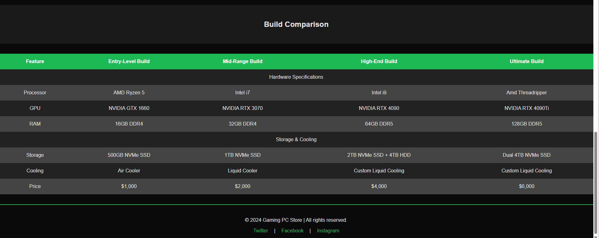

Artifact 3: Mock Gaming PC Website
Objective: This project focused on designing and developing a multi-page website for a mock gaming PC company. It demonstrates proficiency in HTML, CSS, and web design principles, with a strong emphasis on usability, accessibility, and aesthetics.
Highlights
The website consists of three main pages: Home, Products, and Contact Us. Each page is designed with a consistent layout and navigational structure. Below are some of the key features:
- Responsive navigation bar that indicates the current page using CSS pseudo-classes.
- A visually appealing product table with alternating row colors and detailed product descriptions.
- A "Contact Us" form with input validation, placeholder examples, and required fields to enhance user experience.
- Accessibility-focused design, including descriptive `alt` attributes for images and a clean semantic structure.
Design Principles
This project applied Gestalt principles such as proximity, alignment, and contrast to ensure a professional and user-friendly design. For example:
- Proximity: Related navigation links are grouped together, making it easy for users to find what they need.
- Alignment: Consistent margins and padding across pages create a polished layout.
- Contrast: Clear distinctions between text and background improve readability.
Challenges and Solutions
Challenge: Ensuring responsive design for different screen sizes.
Solution: Used CSS flexbox and percentage-based widths to create a layout that adjusts seamlessly to various devices.
Challenge: Keeping the design visually consistent across pages.
Solution: Created a global CSS file for shared styles and page-specific CSS for unique elements.
Workflow and Learning Outcomes
This project enhanced my understanding of creating professional websites from scratch using only HTML and CSS. I learned how to structure a website semantically, implement responsive navigation, and create user-friendly forms. Through this project, I also gained insights into how design principles can improve website usability and engagement.
The product table showcases my ability to organize data efficiently while implementing design principles like alternating row colors for better readability.
